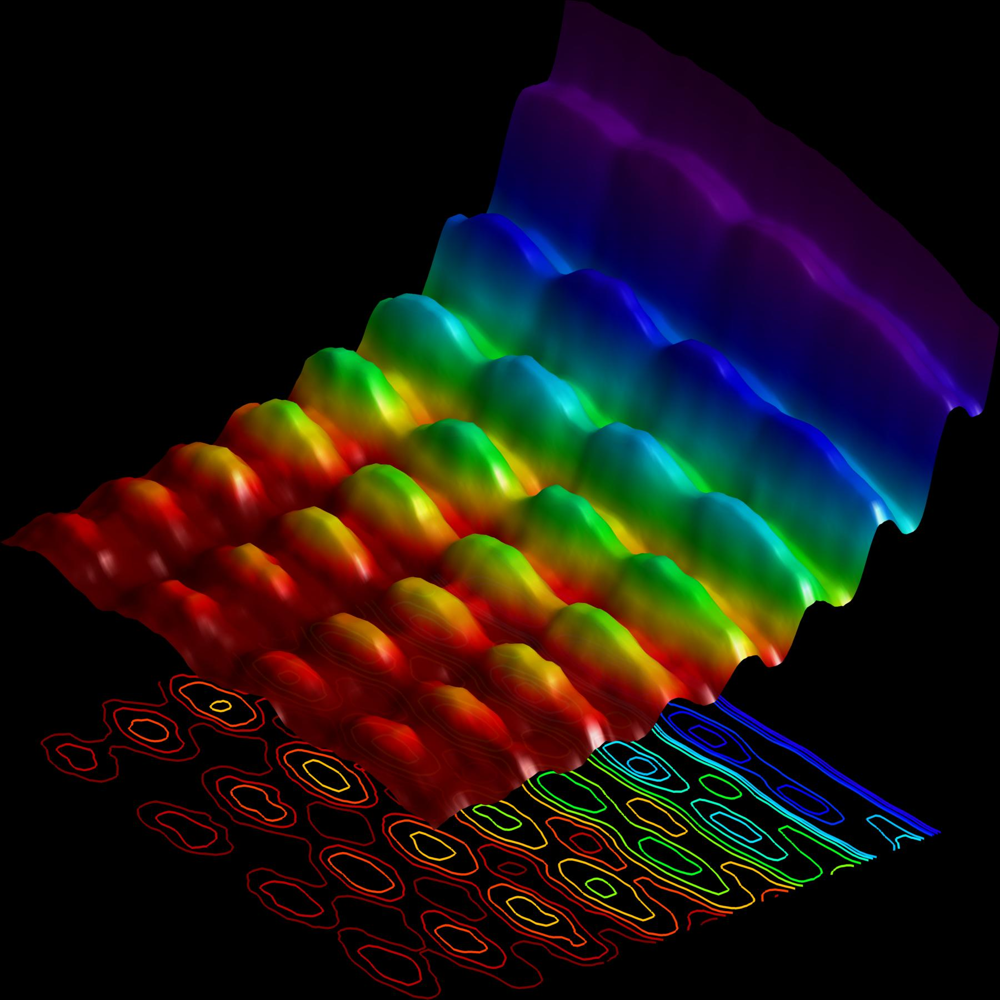
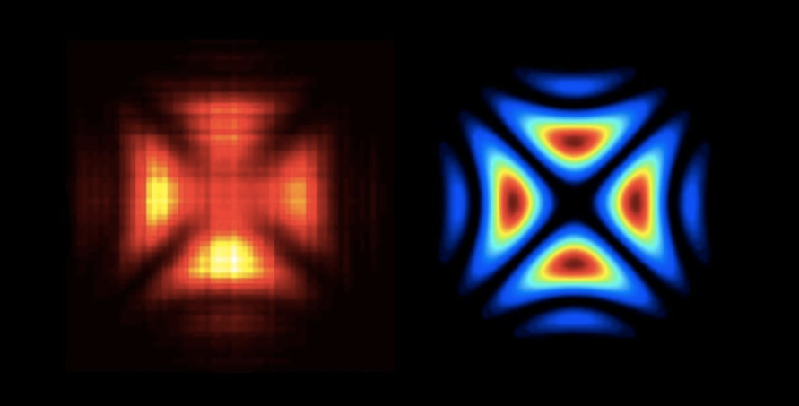

What exactly is a photon? Definition, properties, facts
Imagine a shaft of yellow sunlight beaming through a window. According to quantum physics that beam is made of zillions of tiny packets of light, called photons, streaming through the air. But what exactly is a photon? photon
Photons are the stuff light is made of. Credit:JFC. Contents [hide]- Definition
- Photon properties
- History
- Modern theory of light and photons
- What a photon looks like
- Facts about photons
Definition
A photon is the smallest discrete amount or quantum of electromagnetic radiation. It is the basic unit of all light. Photons are always in motion and, in a vacuum, travel at a constant speed to all observers of 2.998 x 108 m/s. This is commonly referred to as the speed of light, denoted by the letter c. As per Einstein’s light quantum theory, photons have energy equal to their oscillation frequency times Planck’s constant. Einstein proved that light is a flow of photons, the energy of these photons is the height of their oscillation frequency, and the intensity of the light corresponds to the number of photons. Essentially, he explained how a stream of photons can act both as a wave and particle.Photon properties
The basic properties of photons are:- They have zero mass and rest energy. They only exist as moving particles.
- They are elementary particles despite lacking rest mass.
- They have no electric charge.
- They are stable.
- They are spin-1 particles which makes them bosons.
- They carry energy and momentum which are dependent on the frequency.
- They can have interactions with other particles such as electrons, such as the Compton effect.
- They can be destroyed or created by many natural processes, for instance when radiation is absorbed or emitted
- When in empty space, they travel at the speed of light. History
The nature of light — whether you regard it as a particle or a wave — was one of the greatest scientific debates. For centuries philosophers and scientists have argued about the matter that was barely resolved a century ago. The disciples of a sixth century BC branch of Hindu philosophy called Vaisheshika had a surprising physical intuition about light. Like the ancient Greeks, they used to believe the world was based on ‘atoms’ of earth, air, fire, and water. Light itself was thought to be made of such very fast-moving atoms called tejas. That’s remarkably similar to our modern theory of light and its composing photons, a term coined thousands of years later in 1926 by a chemist named Gilbert Lewis and an optical physicist called Frithiof Wolfers. Later, around 300 BC, the ancient Greek physicist Euclid made a huge breakthrough when he posited light traveled in straight lines. Euclid also described the laws of reflection and, a century later, Ptolemy complemented with writings about refraction. IT wasn’t until 1021, however, that the laws of refraction were formally established in the seminal work Kitab al-Manazir, or Book of Optics, by Ibn al-Haytham. The Renaissance would usher in a new age of scientific inquiry into the nature of light. Of note are René Descartes’ incursions in a 1637 essay called La dioptrique, where he argued that light is made of pulses that propagate instantaneously when contacting ‘balls’ in a medium. Later writing in Traité de la lumière published in 1690, Christiaan Huygens treated light as compressible waves in an elastic medium, just like sound pressure waves. Huygens showed how to make reflected, refracted, and screened waves of light and also explained double refraction. By this time, scientists had split into two entrenched camps. One side believed that light was a wave while the other view was of light as particles or corpuscles. The great champion of the so-called ‘corpuscularists’ was none other than Isaac Newton, widely believed as the greatest scientist ever. Newton wasn’t fond at all of the wave theory since that would mean light would be able to stray too far into the shadow. For much of the 18th century, corpuscular theory dominated the debate around the nature of light. But then, in May 1801, Thomas Young introduced the world to his now famous two-slit experiment where he demonstrated the interference of light waves. Young's slit experiment shows how each slit acts as a source of spherical waves, which "interfere" as they move from left to right as shown above. Credit: University of Louisville Department of Physics. Young’s slit experiment shows how each slit acts as a source of spherical waves, which “interfere” as they move from left to right as shown above. Credit: University of Louisville Department of Physics. In the first version of the experiment, Young actually didn’t use two slits, but rather a single thin card. The physicist simply covered a window with a piece of paper with a tiny hole in it which served to funnel a thin beam of light. With the card in his hand, Young witnessed how the beam split in two. Light passing on one side of the card interfered with light from the other side of the card to create fringes, which could be observed on the opposite wall. Later, Young used this data to calculate the wavelengths of various colors of light and came remarkably close to modern values. The demonstration would provide solid evidence that light was a wave, not a particle. Meanwhile, this time in France, the corpuscularist movement was gaining steam after recent developments attributed the polarization of light to some kind of asymmetry among the light corpuscles. They suffered a great defeat at the hand of Augustin Fresnel who in 1821 showed that polarization could be explained if light were a transverse wave with no longitudinal vibration. Previously, Fresnel also came up with a precise wave theory of diffraction. By this point, there was little stable ground for Newton’s followers to continue the debate. It seemed light is a wave and that’s that. The problem was that the fabled aether — the mysterious medium required to support electromagnetic fields and to yield Fresnel’s laws of propagation — was missing despite everyone’s best efforts to find it. No one ever did, actually. A huge breakthrough came in 1861 when James Clerk Maxwell condensed experimental and theoretical knowledge about electricity and magnetism in 20 equations. Maxwell predicted an ‘electromagnetic wave’, which can self-sustain, even in a vacuum, in the absence of conventional currents. This means no aether is required for light to propagate! Moreover, he predicted the speed of this wave to be 310,740,000 m s−1 — that’s just a few percent of the exact value of the speed of light. “The agreement of the results seems to show that light and magnetism are affections of the same substance, and light is an electromagnetic disturbance propagated through the field according to electromagnetic laws”, wrote Maxwell in 1865. From that day forward, the concept of light was united with those of electricity and magnetism for the first time.
On 14 December 1900, Max Planck demonstrated that heat radiation was emitted and absorbed in discrete packets of energy — quanta. Later, Albert Einstein showed in 1905 that this also applied to light. Einstein used the term Lichtquant, or quantum of light. Now, at the dawn of the 20th-century, a new revolution in physics would once again hinge on the nature of light. This time, it’s not about whether light is a crepuscule or wave. It’s whether it’s both or not. Modern theory of light and photons Einstein believed light is a particle (photon) and the flow of photons is a wave. The German physicist was convinced light had a particle nature following his discovery of the photoelectric effect, in which electrons fly out of a metal surface exposed to light. If light was a wave, that couldn’t have happened. Another puzzling matter is how photoelectrons multiply when strong light is applied. Einstein explained the photoelectric effect by saying that “light itself is a particle,” for which he would later receive the Nobel Prize in Physics. The main point of Einstein’s light quantum theory is that light’s energy is related to its oscillation frequency. He maintained that photons have energy equal to “Planck’s constant times oscillation frequency,” and this photon energy is the height of the oscillation frequency while the intensity of light corresponds to the number of photons. The various properties of light, which is a type of electromagnetic wave, are due to the behavior of extremely small particles called photons that are invisible to the naked eye. Einstein speculated that when electrons within matter collide with photons, the former takes the latter’s energy and flies out and that the higher the oscillation frequency of the photons that strike, the greater the electron energy that will come flying out. Some of you have a working proof of this idea in your very own home — it’s the solar panels! In short, he was saying that light is a flow of photons, the energy of these photons is the height of their oscillation frequency, and the intensity of the light is related to the number of photons. Einstein was able to prove his theory by deriving Planck’s constant from his experiments on the photoelectric effect. His calculations rendered a Planck’s constant value of 6.6260755 x 10-34 which is exactly what Max Planck obtained in 1900 through his research on electromagnetic waves. Unequivocally, this pointed to an intimate relationship between the properties and the oscillation frequency of light as a wave and the properties and momentum of light as a particle. Later, during the 1920s, Austrian physicist Erwin Schrödinger elaborated on these ideas with his equation for the quantum wave function to describe what a wave looks like. More than a hundred years since Einstein showed the double nature of light, Swiss physicists at the École Polytechnique Fédérale de Lausanne captured the first-ever snapshot of this dual behavior. The team led by Fabrizio Carbone performed a clever experiment in 2015 in which a laser was used to fire onto a nanowire, causing electrons to vibrate. Light travels along this tiny wire in two possible directions, like cars on a highway. When waves traveling in opposite directions meet each other they form a new wave that looks like it is standing in place. Here, this standing wave becomes the source of light for the experiment, radiating around the nanowire. The fired a new beam of electrons to image the standing wave of light, which acts as a fingerprint of the wave-nature of light. The result can be seen below. The first ever photograph of light as both a particle and wave. Credit: EPFL.